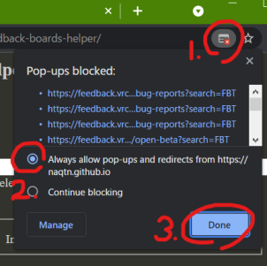
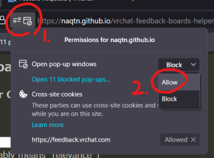

Could not open some windows.
Allow pop-up for this tool to use "from all Boards" feature. See "pop-up blocker" configuration in your web browser's security setting.
Easy way to fix on Chrome:  , on Firefox: 
More details: Chrome Firefox Edge Safari